高血压与心脏病
──吃肉者的因果
冯冯
迷失在未来 / 誊录
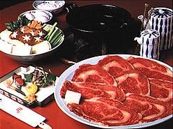
打开几份报纸的广告页，看到不少餐馆酒楼的名菜广告，看来是引人垂涎欲滴，但是我观之则触目惊心。
请看这一家著名的名菜菜单：
“生炸醉鹌鹑；海参鳝鲛羹；龙王太子献金银；正宗家乡酱爆鸭；巧制金荷香滑鸭；牙白山上扒四宝；蜜味京都上肉排；红烧三丝火焰斑；七彩香仁豆腐露。”
再请看这一家食谱：
“常备游水生猛鱼虾蟹；红烧四喜翅；碧绿明虾球；蚝油三宝；玉树鸳鸯鸭；北京片皮鸭；七彩桂花蚌；清蒸鲜石班。
又再看这一家：
“肉粳；蟹壳黄；鸡丝拉皮；酱肉烧饼；锅贴；牛肉面；蹄花面。”
还有这一家：
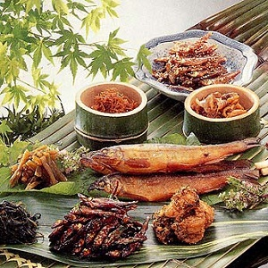 “鸡茸燕窝羹；当红炸子鸡；罗汉扒大鸭；带子时菜；海参冬菇；八珍烩蚝；蟹肉菜胆；清蒸海鲜；京都排骨；鸡片雪儿羹；蟹肉扒菜胆；北菇蒸滑鸡；甜酸咕噜肉；明虾大沙津；鸡茸烩燕窝；北京挂炉鸭；五香椒盐鸡。”
够了，我越看越难过，越心惊，这些所谓名菜，都是有害无益的高度脂肪、高度胆固醇、高度蛋白质，都是导致心脏病、血管栓塞与脑血管栓塞的有毒物质呀！又再佐以美酒，什么茅台、花雕、白兰地、威士忌，简直就是自杀！
难怪那么多人患高血压与心脏病、胆结石！人们吃肉喝酒，只道是美味享受，哪知是自杀？
有些人更不以吃肉为足，还要用名酒、药材炖猪脑牛脑，吃蛇胆，吃鹿茸，以为进补壮阳滋阴，殊不知，猪脑牛脑所含的高度胆固醇最多，蛇胆含的胆固醇更高，这些毒物，吃进人体，都成为血管内的胆固醇及游离脂肪片，堆塞了血管内壁，终于形成血管闭塞不通，心脏病发，心肌奇痛，至于停顿，或者脑血管栓塞，轻则“中风”半身不遂，重则死亡。
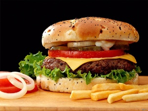 美、加一般人也都吃肉吃脂肪太多，不单是富人为然，由于美、加两国都是富国，肉类生产过剩，人民生活太富裕，吃肉成为很普遍而且不算奢侈的“享受”，几乎家家都吃大块牛排，大只烤鸡。就是小孩子，也几乎天天自己去买炸牛肉饼吃，因为太便宜，一元美金，就可以买到一大只炸牛肉饼夹心面包，外加油炸洋芋条，还有汽水或咖啡，这种油腻腻的油炸碎牛肉，含有高度的脂肪和胆固醇，而那些油炸芋片，则是在常年不换的一桶桶内烹炸的，这种“万年油”，被长期的高热分解，析出一种有毒的化学物质，是一种致癌的毒素，那些煎炸焦香的肉类，也产生致癌的化学毒质，可是一般人都不知道！
移民来到美、加的中国人，都说：“牛肉好便宜啊！鸡好便宜啊！于是拼命吃肉吃鸡，每一顿饭前都是烤肉烤鸭，孩子们吃得个个都变了畸形小胖子，我见过有一家的孩子，一餐就吃了十二只炸鸡腿，他才六岁。
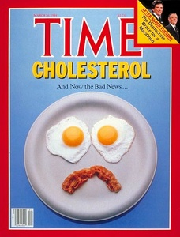 在台湾和香港的人，近年由于国民收入大增，已接近美、加，生活水平也追上或者超过了美、加，不用说人们也就增加了肉类与酒类的消耗，台港地区的居民心脏病与中风的人数也随着直线上升。
中外一样，大多数人都迷信多吃肉吃脂肪才会强壮，多喝酒才会补身，这些错误的观念，不知害死了多少人哪！
美国医学界有心人士，最近敲起了警钟，在“时代”周刊上登出专文，指出肉类之害，也在ABC电视系统上向全美广播，指出吃肉是导致心脏病与脑中风的最大原因。
一九八四年三月二十六日的“时代”周刊封面专文“胆固醇”，与同月的加拿大医学月刊所载的“心脏病脑充血与胆固醇及脂肪之关系”，两文都恳切指出吃肉的危险。
( 附记：时代周刊封面专文“胆固醇”详细内容 )
综合两文，我们发现含有胆固醇最多的肉类，依次如下：以每三安土计算其所含的胆固醇及饱和脂肪。
含脂食物類別 |
膽固醇 |
飽和脂肪
|
豬腦或牛腦 |
500 mg |
4.0 |
牛肝或豬肝 |
372 |
2.5 |
鴨肉（肥） |
250 |
5.0 |
牛肉（肥） |
186 |
4.0 |
豬肉（肥） |
185 |
6.2 |
豬肉（瘦） |
180 |
3.2 |
牛肉（瘦） |
156 |
2.4 |
火雞肉（黑肉） |
150 |
2.3 |
火雞肉（白肉） |
120 |
2.0 |
雞肉（黑肉 |
82 |
2.7 |
雞肉（白肉） |
76 |
1.3 |
雞蛋 |
274 |
1.7 |
蟹肉 |
173 |
1.8 |
魷魚 |
153 |
0.4 |
魚肉（肥） |
59 |
1.2 |
魚肉（瘦） |
59 |
0.3 |
蝦肉 |
48 |
0.2 |
蛤蜊 |
36 |
0.3 |
奶油 |
31 |
7.1 |
牛奶（全脂） |
33 |
5.1 |
冰淇淋 |
59 |
8.9 |
奶酪（芝士） |
30 |
6.0 |
从上列各种常用肉类食物的胆固醇及饱和脂肪比例，可见这些食物都不是对人体有益的食物。
爱吃肉类，就是慢性自杀！
普通一个成年男人，每天最多只可应付三百毫克（mg）的胆固醇，女子最多可应付两百毫克，脂肪量则在〇点五以内，假如吃肉一块，那就已超过了每人每天的应付能力，肉类的胆固醇及脂肪，进入人体以后，又引起肝脏制造更多的胆固醇，它与游离脂肪薄片，在血管内积聚，逐渐形成淤塞，使血管狭窄，引起高血压，血管硬化，导致心脏衰竭或脑血管栓塞而致死亡！
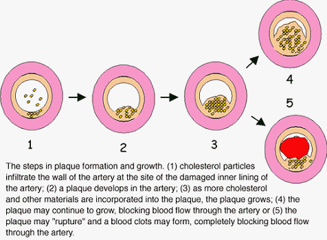 由胆固醇与饱和脂肪而形成的血管栓塞过程：
第一期，肉类的游离脂肪薄片，及胆固醇微粒，在人体动脉血管内随血液流动，遇到有些或因新陈代谢或因伤损而脱落的血管内壁内皮空隙，它就沉淀积聚。
第二期：血管内壁更内层的“大食细胞”（白血球之一种），及血液中的血小板，两者互相积聚起来，堆于伤损的血管内壁。“大食细胞”吞吃那些沉淀的胆固醇及饱和脂肪，逐渐形成脂肪小球。
第三期：血管壁内的肌肉细胞向血管内通道推进，越生越厚，渐渐隆起阻塞了血管，终于引起血液难以流通，血流狭窄，形成高血压。
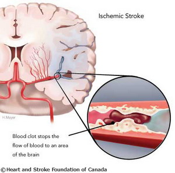 第四期：心脏内的冠状动脉堆积满塞脂肪与胆固醇，血液无法流入，心肌细胞死亡，先导致心痛（ANGINA）逐渐沉重，整个心脏死亡，或者，脑血管同样塞满脂肪及胆固醇，发生脑血管栓塞（中风）与脑溢血，以致死亡。
上述的情况，并不限于老年人或肥胖者，不少年轻人食肉及脂肪太多，加上吸烟太多，喝酒太多，加速了胆固醇的堆积，以致发生心脏衰竭或脑血管栓塞，有些小孩在很小的年龄已因吃肉吃脂肪太多亦有此等病症。那些从不吃菜蔬，只吃肉的人，每餐非肉不饱，无肉难以下咽，他们多数患有心脏病、高血压、脑充血，甚至于癌症！
“这些患者，平时往往毫无预兆，亦无病征”哥伦比亚大学医学院心脏专家李维医生（DR. R. LEVY)说：“很多人都不自知已有心脏病，等到发现时，已经太迟，病发立即突然死亡。”
经美国卫生专案十年来的研究，发现多吃肉类的人，他们平均每毫升（deciliter）的血液重所含的胆固醇，高达两百六十五毫克（mg），普通人平均在二百至二百五十MG。常吃素的人则平均在二百mg以下。加拿大的调查，发现完全吃素的人，其胆固醇在一百五十至六十之间，极善于选择保健素食的人，胆固醇最低，有些还不到一百mg，他们患高血压与心脏病的比例不及吃肉者的十分之一。
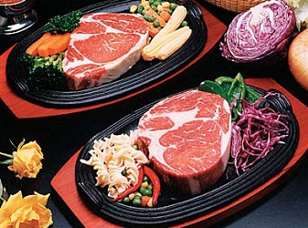 美国政府卫生保健当局的统计，去年一九八三年，全美有一百多万人患心脏病突发，其中大半数不治而死亡，而其中大多数都是在四十岁至五十岁的有为英才，多为事业有成，经济良好的成功人物，烟、酒、咖啡、肉食，每日不可或缺。
“美国心脏保健协会”（AHA）多年来不断呼吁社会人士将烟酒肉食的生活习惯改革，最好实行素食，但是一般人大多数不甚重视这种呼声，依然是纵情食肉饮酒吸烟，事业成功的人不用说都是日日宴会，酒食征逐，就是收入不丰的人，也竞相以食肉饮酒为生活的最大享受。穷人吃不起大牛排，也得吃碎牛肉饼，殊不知那些便宜的碎牛肉，根本就是牛筋牛脂与一些零碎残肉绞成的，所含脂肪高达百分之六十，再经过油煎，饱和脂肪度高达百分之八十，吃下去，日积月累，形成了血管栓塞，心脏病，脑充血，加速走向坟墓，一元一份的口口口炸牛肉夹面包，公司赚了几百亿元，却害死了百千万计的穷人和小孩子，就更别说这些公司屠杀了多少千千万万头牛羊，杀孽深重，种下多少恶因。
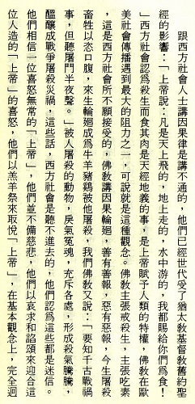
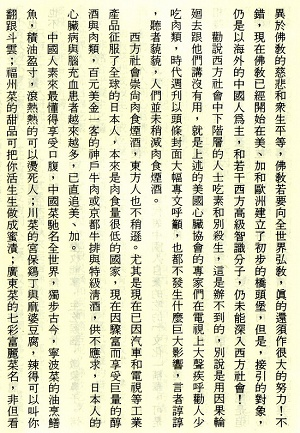
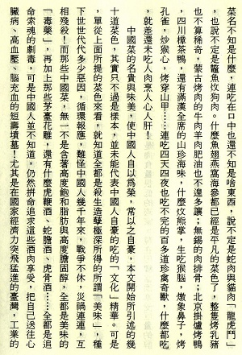
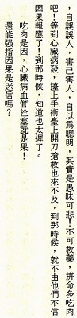
原载《现代佛教》第39期：1984年8月1日
收录于《天眼慧眼法眼的追寻》